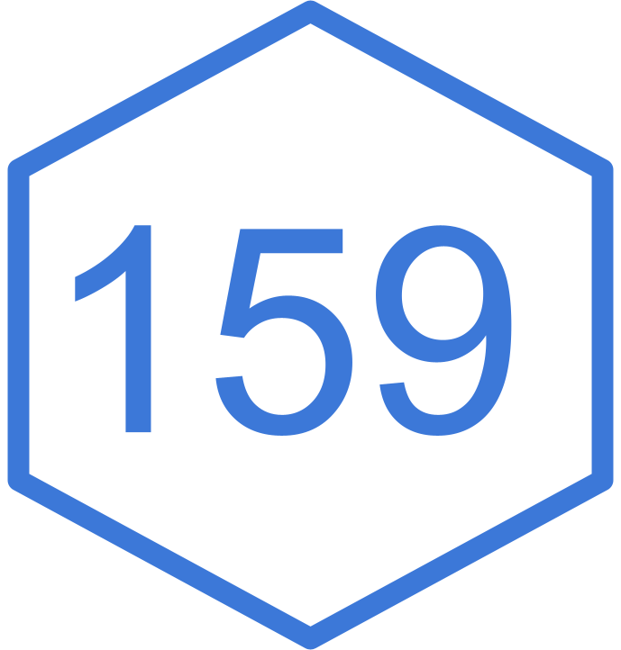

TBD
Suppose you wrote some code:
Who owns the code?
What can you or others do with it?
In addition to code, suppose you also:
Who owns all of these?
What can you or others do with them?
Any software you write (and save)
It’s a legal process that grants the creator of an original work exclusive rights to its use and distribution
Under international law, copyright applies automatically the moment an original work is “fixed in a tangible medium.”
The second someone types code into a text file and saves it (or pushes it to GitHub), they own the copyright to that exact expression of code.
A creator does not need to include the © symbol, write “All Rights Reserved,” or register with a government office to be protected.
Who is the owner of the copyright?
The copyright owner may be you, or your employer
Exception: works created by the US government cannot be copyrighted (they are considered to be in the public domain)
Regarding software, we care about rights of:
Similar considerations can apply to creative-data and media (e.g. reports, graphics, summaries, audio, video)
Copyright (All Rights Reserved) means a stranger cannot legally do any of the following without explicit, written permission from the owner:
Reproduce: They cannot download, copy, or duplicate the file onto their local machine.
Distribute: They cannot host the file on their own server or share it with others.
Modify: They cannot change a single line of the code to fix a bug or tweak an algorithm.
Derive: They cannot build a new software package that imports or relies on that copyrighted code.
Copyright is a critical nuance for computational reproducibility
Because reproducibility involves code, data, and derived outputs (tables, graphics, summaries, etc).
This creates a massive legal trap on platforms like GitHub.
Public to View -vs- Public to Use: Making a repository “Public” on GitHub means people have a license to view and fork the code on GitHub’s infrastructure (per GitHub’s Terms of Service).
Invisible Wall: It does not grant viewers the right to download it, run it on their university cluster, or use it in their research paper.
Without a license file, a public repository is looking glass science. Strangers can look at it, but if they touch it, they are technically committing copyright infringement.
The Reproducibility Failure: If a peer cannot legally run your code, your computational science is not reproducible.
To further complicate things, copyright treats code, data, and media completely differently:
Code is protected: Copyright treats software code exactly like literary work (like a novel or a poem).
Media is also protected: Reports, graphics, audio, video are creative work.
Facts and Data are NOT protected: Copyright does not protect facts, ideas, mathematical formulas, or raw data. For example, a table listing the boiling points of elements cannot be copyrighted because those are facts.
Creativity in Data: Only the creative arrangement or original selection of a dataset can be copyrighted (e.g., a carefully curated and cleaned database structure).
Facts
Anyone is legally free to scrape that public data and publish it.
Copyrighted data
A selective, expert-curated guidebook or specialized database, such as The 50 Best Independent Coffee Shops in the Bay Area.
The 50 Best Independent Coffee Shops in the Bay Area
No one can legally prevent you from reusing the individual facts (e.g., that a specific café is located at 123 Main Street)
However, the specific selection, arrangement, and editorial presentation created by the author are protected by copyright.
Copying the entire curated list or database layout as your own would constitute copyright infringement.
Resources:
What do you understand by “Free Software”?
What do you understand by “Open Source”?
There is no official “public domain license” because a work in the public domain belongs to everyone rather than being owned or restricted by a license.
However, tools and public-domain-equivalent instruments exist to legally dedicate or waive copyright, e.g.
0BSD (Zero-Clause BSD): A license that grants unconditional permission to use, copy, modify, and distribute a work without any attribution requirement.
The “Do Whatever” Category
MIT License: Short, simple, allows commercial use, requires keeping the copyright notice.
BSD License: Like MIT but with multiple variants depending on the number of clauses.
Apache 2.0: Similar to MIT but includes explicit patent rights protection from contributors.
Best For: Maximizing adoption, industry collaboration, and academic software packages.
They allow you to freely use, modify, and distribute software for commercial or private use without requiring you to open-source your derivative code.
Permissive Freedom: Allow free use, copying, modification, and integration into proprietary (closed-source) software.
No Copyleft: They are not “viral” like the GPL; you are not forced to release your modified source code under the same license.
Attribution & Disclaimers: They require you to keep the original copyright notice, license text, and liability disclaimers intact.
| Feature | MIT | BSD (2-Clause) | BSD (3-Clause) | Apache |
|---|---|---|---|---|
| Document Length | Short | Short | Short | Long |
| Commercial Use Allowed | Yes | Yes | Yes | Yes |
| Modification & Distribution | Yes | Yes | Yes | Yes |
| Requires Copyright Attribution | Yes | Yes | Yes | Yes |
| Non-Endorsement Clause | No | No | Yes | Yes |
| Explicit Patent Grant | No | No | No | Yes |
| Explicit Trademark Protection | No | No | Yes | Yes |
| Requires Stating Changes | No | No | No | Yes |
The “Keep It Free” Category1
Keep in mind that this type of licenses can deter commercial partners or integration into proprietary institutional tools.
Software licenses do not fit:
Instead of software licenses you need to use Creative Commons (CC) Framework
Software Licenses
These assume the work will be compiled, executed, linked, or imported into other programs.
They regulate things like running the code, modifying the source logic, or embedding the code into a larger application.
Media Licenses
These assume the work will be read, viewed, listened to, or displayed.
They regulate things like printing a text, showing an image in a presentation, or remixing an audio track into a video.
If you apply a software license to a research paper or an image, it is legally muddy.
Concepts like “compiling” or “linking” do not map onto a JPEG or a PDF or MP3 or MP4 files.
Software licenses generally assume the asset is a functional tool, not an artistic expression.
Students often instinctively gravitate toward Creative Commons Non-Commercial (CC BY-NC) for their research papers, figures, and slide decks because they want to protect their work from being sold by corporations.
However, NC clauses are dangerous for open science.
NC clauses are dangerous for open science, because:
“Commercial use” is poorly defined in court.
Academic Trap: If a researcher at a private university or a commercial medical center downloads a dataset under a CC BY-NC license to reproduce a study, they might be violating the license because their institution charges tuition or holds patents.
Funding Compliance: Many public grants (like NIH or Horizon Europe) strictly mandate that research outputs be published under CC BY (Attribution Only) or CC0 (Public Domain) to maximize public good. An NC clause will often violate funding terms.
Every repository needs a root-level LICENSE file. You can split your repository assets using the correct legal tool for each job:
💻 The Code (Python/R script files, Notebooks): Use MIT, BSD, Apache 2.0, or GPL v3.
📊 The Data (CSV files, SQL databases, JSON logs): Use CC0 (Public Domain Dedication) to avoid legal bottlenecks when combining datasets.
📝 The Narrative (Research papers, README text, documentation pages): Use CC BY 4.0.
🎨 The Visuals (Plots, diagrams, summary charts, introductory videos): Use CC BY 4.0.
Using a LICENSE file, and a README.md file
LICENSE file in the root directory
LICENSE (No extension)README.md, students add a “License & Citation” section that explicitly draws boundaries around the assets.At the very bottom of the README.md include some text like the following:
README.md
## Licensing
The assets in this repository are split under different licenses
to ensure maximum reproducibility:
- **Code:** All source code (`.py`, `.sh`, `.ipynb`) is licensed under
the [MIT License](LICENSE).
- **Data:** All datasets in the `/data` directory are dedicated to the
public domain under [CC0 1.0 Universal](https://creativecommons.org).
- **Narrative & Visuals:** All documentation, text, and figures
(`/plots`, `/docs`) are licensed under a
[Creative Commons Attribution 4.0 International License](https://creativecommons.org).The REUSE standard explicitly tags every single asset using a dedicated directory and small text headers.
Instead of putting licenses in the root directory, you create a folder named LICENSES/ and place the text of every license they use inside it, named exactly after their SPDX identifier:
LICENSES/MIT.txtLICENSES/CC0-1.0.txtLICENSES/CC-BY-4.0.txtAdd a tiny, commented header to the top of your files to state who owns it and how it is licensed.
script.py
In addition to a top-level README file, as well as LICENSE files (for code and non-code) it’s a good idea to have a CITATION file.
Citation File Format (CITATION.cff)
This YAML file lets platforms like GitHub automatically generate APA/BibTeX citations for repositories.
Also, you can mint a Digital Object Identifier (DOI) by linking a GitHub release to Zenodo.
CITATION.cff
cff-version: 1.2.0
message: "If you use this software, please cite it as below."
authors:
- family-names: "Smith"
given-names: "Jane"
orcid: "https://orcid.org"
- family-names: "Doe"
given-names: "John"
title: "My Awesome Data Science Tool"
version: "1.4.2"
doi: "10.5281/zenodo.1234567"
date-released: "2026-10-15"
url: "https://project-webpage.com"
repository-code: "https://github.com/project-repo"
keywords:
- "data-science"
- "programming"
license: "MIT"